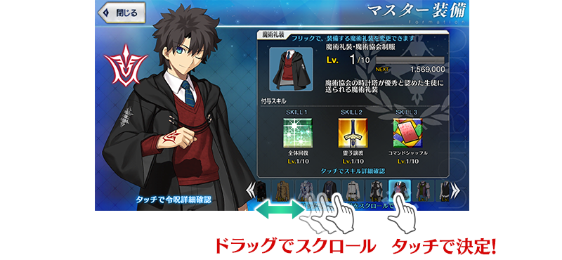
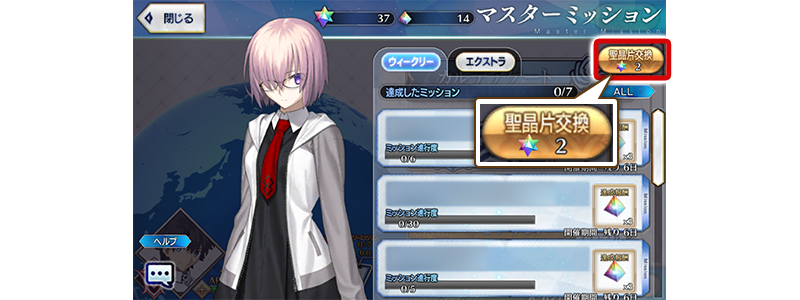
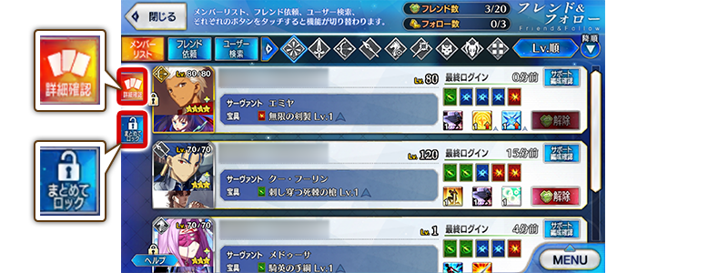
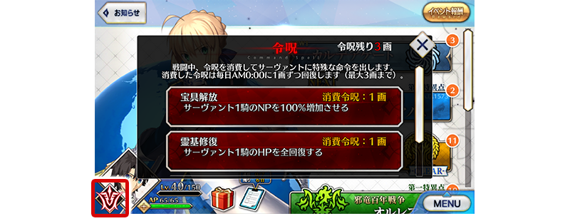

- 10/25
- 【來自迦勒底廣報局】關於10月的遊戲更新
非常感謝各位使用「Fate/Grand Order」。
來自迦勒底廣報局，告知關於預定2019年10月的下次遊戲更新。
以下介紹更新後反映的更新內容中，具有代表性的更新內容。
①御主裝備畫面中修改魔術禮裝選擇方法
在御主装備畫面變得會顯示持有的魔術禮裝一覧。
點擊畫面下方圖示的話可切換裝備的魔術禮裝。
另外，持有超過顯示數魔術禮裝的情況拖曳圖示滾動的話，變得可查找想裝備的魔術禮裝。

※開發中畫面。
②御主任務畫面中修改成更好了解能交換的聖晶石數
御主任務畫面中，變得更好了解可從持有聖晶片交換的「聖晶石數」。
此時，按鍵的名稱會從「道具交換」變更為「聖晶片交換」。

※開發中畫面。
③好友&跟隨的上鎖功能追加
追加可上鎖不會誤解除好友、跟隨的功能。
切換成「一起上鎖」點擊好友或跟隨的話，可上鎖點擊的好友或跟隨。
於「詳細確認」與目前同樣地能確認好友或跟隨的從者與概念禮裝詳情。

※開發中畫面。
④在管理室(ターミナル)畫面及地圖畫面中點擊令咒圖示時變更成會跳出令咒視窗 管理室(ターミナル)、區域地圖畫面中，在點擊畫面左下的令咒圖示時變更成會顯示令咒視窗。

※開發中畫面。
以上為預定2019年10月實施的下次遊戲更新主要內容。
另外今後，也預定在期間限定活動和期間限定宣傳活動中，會有將通過主線關卡設為開放條件的情況。
無論如何，如果推進主線關卡的攻略會有所幫助。
今後也請多多指教「Fate/Grand Order」。